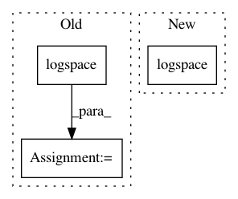

aac6bd04cfa2528ef09de6bf204d5a29151d904d,scipy/signal/tests/test_ltisys.py,Test_bode,test_05,#Test_bode#,286
Before Change
minpole = min(abs(np.real(vals)))
maxpole = max(abs(np.real(vals)))
n = 10;
expected_w = np.logspace(np.log10(minpole) - 2, np.log10(maxpole) + 2, n)
w, mag, phase = bode(system, n=n)
assert_almost_equal(w, expected_w)
def test_06(self):
After Change
maxpole = max(abs(np.real(vals)))
n = 10;
// Expected range is from 0.01 to 10.
expected_w = np.logspace(-2, 1, n)
w, mag, phase = bode(system, n=n)
assert_almost_equal(w, expected_w)
def test_06(self):
In pattern: SUPERPATTERN
Frequency: 3
Non-data size: 3
Instances
Project Name: scipy/scipy
Commit Name: aac6bd04cfa2528ef09de6bf204d5a29151d904d
Time: 2013-02-11
Author: warren.weckesser@gmail.com
File Name: scipy/signal/tests/test_ltisys.py
Class Name: Test_bode
Method Name: test_05
Project Name: scikit-optimize/scikit-optimize
Commit Name: dd7433da068b5a2509ef4ea4e5195458393e6555
Time: 2018-01-26
Author: magnus@hvass-labs.org
File Name: skopt/plots.py
Class Name:
Method Name: _map_bins
Project Name: scipy/scipy
Commit Name: 022ad077f8e1e0e3b51c7f60257642a1e2cc326c
Time: 2013-02-12
Author: kroeger.niklas@gmail.com
File Name: scipy/signal/tests/test_ltisys.py
Class Name: Test_freqresp
Method Name: test_05